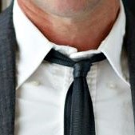
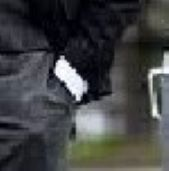

デザイナーのThom Browne（トム・ブラウン）は、1965年アメリカ生まれ。ノートルダム大学で経営学を学んだ後俳優を目指しLAへ。オーディションや広告撮影に参加するうちにヴィンテージのテーラードスーツに魅了された彼は、1997年にニューヨークへ移住。ファッション界へ転身し、Giorgio Armani（ジョルジオ・アルマーニ）のショップスタッフとして働き始めた。その後、Polo Ralph Lauren（ポロ・ラルフ・ローレン）が所有するブランドClub Monako（クラブ・モナコ）のチームに才能を見出され、デザイナーとしてのキャリアをスタートした。そして2001年、ついに自身のブランドを設立。以来、アメリカン・トラディショナルスタイルを軸としたメンズ＆レディースウエアを展開している。
Thom Browne最大の特徴は、1950〜60年代を彷彿とさせるアメリカン・トラディショナルをモダンに昇華したスタイル。金ボタンをあしらった紺のジャケットや、スクール風カーディガンからインスパイアされたアイビールックがおなじみだ。またThom Browneのコレクションによく登場するのが、グレーのスーツ。Thomがグレーにこだわる理由は「父が毎日グレーのスーツを着ていたから」「街で粋な老人がグレーのスーツを着こなしているのを偶然見かけ、目が離せなかったから」などの説が。
ボタンダウンシャツ
トムブラウンはしわひとつないきれいなスーツに、洗いざらしのラフなオックスフォードシャツを合わせるアンバランスなスタイルに美学を持つ。そして、ボタンダウンはあえて外す。多くの人が留めている、ボタンダウンを外すことで、自分のスタイルを作り上げている。
足首

パンツは基本的にダブル仕上げで、幅は7cm と少し太め。スーツスタイルでありながら足首を見せるスタイリングは癖があるように感じるが、「男にとっての足首は、女にとっての胸の谷間だよ。」とインタビューで答えるほどこだわりのあるスタイルのよう。
タイイン
ハイウエストなスラックスのおなか部分に細身のグレーのタイをインして履くのがトムブラウン流のスタイル。その結果、体の中心からタイがぶれることがなく、白のオックスフォードシャツとグレージャケットの間に1本芯を通すかのようなスタイルがうまれる。
袖丈
通常スーツスタイルにおいて、ジャケットの袖丈からシャツがのぞく理想的な長さは1～1.5cm程と言われるが、数cmのぞかせるのがトムブラウン流。都内店舗の販売員の方で5cm程白シャツの袖がのぞくよう詰めている方もおりファンの中でもそれぞれのスーツスタイルが存在。